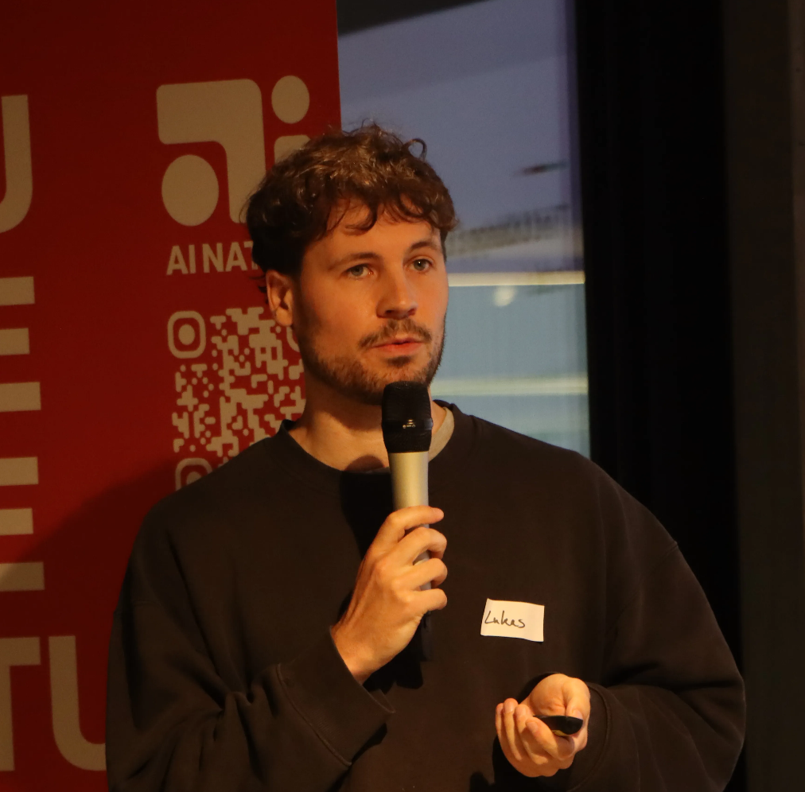

I'm an AI & product engineer specializing in LLM evaluation, model behavior, and safety/quality systems. I build practical tooling: eval harnesses, monitoring, red-teaming workflows, and product integrations.
Currently based in Berlin, I work independently — building Open Working Hours, a privacy-preserving data donation platform using differential privacy to surface unreported overtime in German healthcare, and prototyping a real-time conversational language tutor.
Previously, I was at Cornelsen, one of Germany's leading EdTech publishers, where I focused on quality and safety for LLM-based educational systems. I built their evaluation platform, designed prompt scaffolding, and developed synthetic student modeling grounded in psychological theory.
My background combines cognitive neuroscience, AI ethics, and machine learning. I've worked across academia, civil society, and applied industry settings, including research positions at the University of Hagen, the Institute of Medical Genetics at Charité, and the NGO AlgorithmWatch.
I'm particularly interested in the human side of machine learning systems: how people shape them, use them, and govern them — including work on human oversight, algorithmic fairness, and participatory evaluation frameworks.
I was accepted for a DPhil at the Oxford Department of Computer Science to work on participatory approaches to AI governance with Reuben Binns as my supervisor, though this path became unfeasible due to funding constraints. Read the full proposal (PDF).
I'm always open to collaborations at the intersection of AI, safety, policy, and ethics — especially when it involves building things and testing ideas.